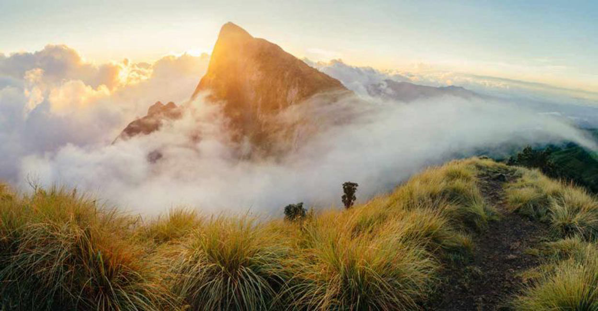
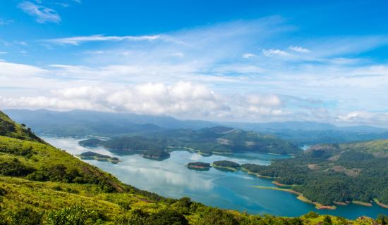
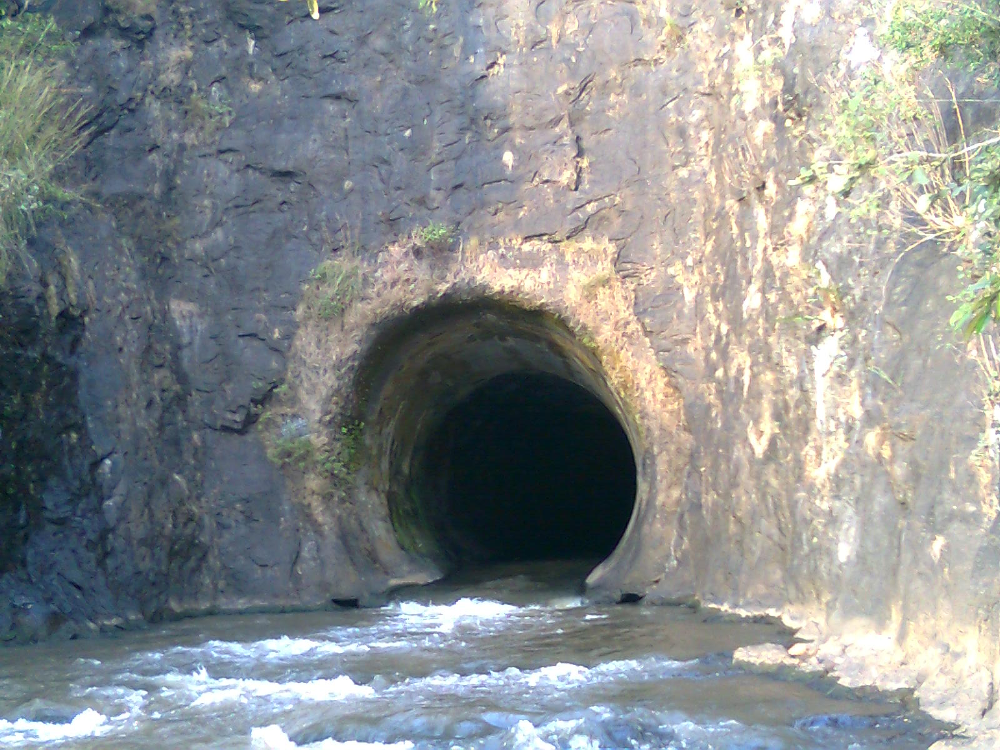

Idukki Arch Dam

The Idukki Dam is a double curvature Arch dam constructed across the Periyar River in a narrow gorge between two granite hills locally known as Kuravan and Kurathi in Mariyapuram village in Idukki District in Kerala, India. At 168.91 metres, it is one of the highest arch dams in Asia.
Idukki Arch Dam is a beautiful rainbow adorning the landscape of Kerala. Beckoning tourists from near and far, it is a must visit tourist destination for long vacations, holidays or even a romantic honeymoon.
How to Get Here
The nearest railway station to Idukki Arch Dam is in Kottayam. It is around 110 kms from the dam. The nearest airport to Idukki Arch Dam, Cochin International Airport, is located around a 100 kms from here.There are frequent cabs and buses that ply between different cities and Idukki.
Meesapulimala
Meesappulimala - a destination for the highly adventurous is the second highest peak in the Western Ghats and a trekking trail via Rhodo Valley. This mountain range is a trekker’s paradise in the Southern parts of India, and is located just a small distance away from the beautiful Munnar town of Idukki district in Kerala. The name of the peak is derived from the fact that it is made of a total of eight peaks. All of these mountains are spread out and have a moustache like formation. The mountain range is sandwiched between Anaimalai Hills and the Palani Hills, which are located near Suryanelli.
Stay over in the tents and enjoy the chillness of Munnar in the Base Camp. Situated at an altitude of about 6000 feet, Kerala Forest Development Corporation offers to stay over programmes. Enjoy the night in the outdoors by sitting around the campfire and savour a delicious supper.
How to Get Here
Travel a distance of 24 km from Munnar via Mattupetty through Aruvikkad estate and you will reach the base camp of Meesappulimala. The total distance from the city center to this base camp is nearly 42 km.
Kalvari Mount
Also known as Kalliyanathandu, Kalvari Mount is a stunning vantage point that offers an aerial view of the Idukki Reservoir and its surrounding peaks and forests. The viewpoint is situated near Thankamani Junction on Thodupuzha - Puliyanmala highway. It is one of the most scenic places that one must-visit during Idukki trip. During Lent, the area turns into a pilgrimage center as Christians go in a procession up the hillock.
It is also an ideal place for mountain climbers and trekkers. The trekkers will be treated to a fascinating experience of low-hung clouds, cool breeze, occasional chirping birds, and hordes of sauntering elephants. However, the hillock has a very steep slope and is mostly scaled by professional trekkers. The trekkers and travelers can take a break at the nearby Tea Factory that offers the finest tea.
As the road is rugged and the rocks are mostly slippery, it is advised to climb to the top only on foot. But if you are a professional driver and you have an SUV, you can choose to drive up. There is enough space to park your vehicles on top. There are two cottages at the foothills of the mountain that are managed by the forest department, where you can stay for the night.
How to Get Here
The mount is located in the route of Idukki Kattapana. Taxis or cabs are available from Ernakulam or Kottayam. Buses also pass through this route frequently. The nearby railway stations are Kottayam and Ernakulum, the later being the larger. The Cochin Airport is the nearest International Airport.
Anchuruli Waterfalls
Situated amongst the gushing locations in Western Ghats Land and providing an enchanting view of the semi-evergreen forests grasslands, Anchuruli Waterfalls (also spelt as Anjuruli) is a surreal location definitely worth visiting. The water that comes from Erattayar River is used for the Idukki hydro-electric project. A tunnel which is 2 km long passes through Erattayar and Anchuruli carrying water to the lake. Though the tunnel is dangerous, it is a fun place to take a stroll at especially for all the adventure lovers.
How to Get Here
To reach Anchuruli Waterfalls, you need to travel for 10 km towards Kottayam from Kattappana. From there, take a right after you come across the Hyundai showroom and take a right turn. After going on for about 4 km, you will reach your destination. In case you are travelling from Vagamon, travel for around 10 km before Kattappana, take a left, and you will reach this exquisite destination